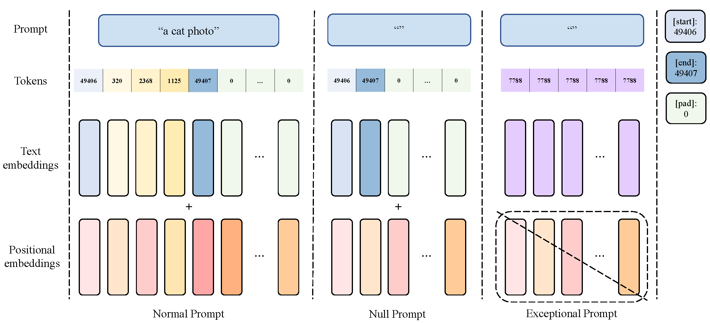
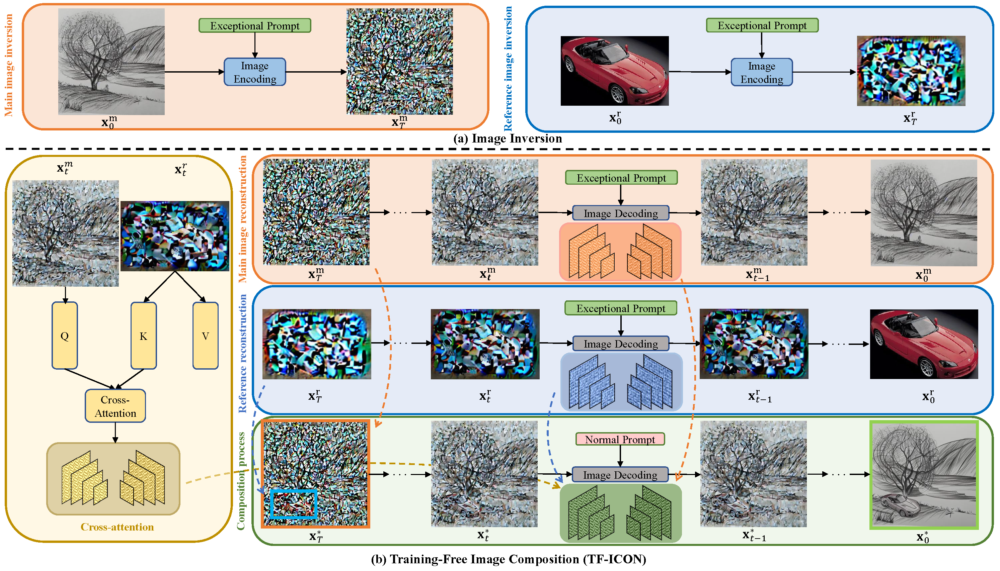

TF-ICON: Diffusion-Based Training-Free Cross-Domain
Image Composition
Shilin Lu1 Yanzhu Liu2 Adams Wai-Kin Kong1
1 School of Computer Science and Engineering, Nanyang Technological University, Singapore
2 Institute for Infocomm Research (I2R) & Centre for Frontier AI Research (CFAR), A*STAR, Singapore

[Paper] [Code] [Benchmark]
Abstract
Text-driven diffusion models have exhibited impressive generative capabilities, enabling various image editing tasks. In this paper, we propose TF-ICON, a novel Training-Free Image COmpositioN framework that harnesses the power of text-driven diffusion models for cross-domain image-guided composition. This task aims to seamlessly integrate user-provided objects into a specific visual context. Current diffusion-based methods often involve costly instance-based optimization or finetuning of pretrained models on customized datasets, which can potentially undermine their rich prior. In contrast, TF-ICON can leverage off-the-shelf diffusion models to perform cross-domain image-guided composition without requiring additional training, finetuning, or optimization. Moreover, we introduce the exceptional prompt, which contains no information, to facilitate text-driven diffusion models in accurately inverting real images into latent representations, forming the basis for compositing. Our experiments show that equipping Stable Diffusion with the exceptional prompt outperforms state-of-the-art inversion methods on various datasets (CelebA-HQ, COCO, and ImageNet), and that TF-ICON surpasses prior baselines in versatile visual domains.
Image Inversion with Exceptional Prompt
In the unconditional setting, solving the diffusion ODE in the reverse direction enables us to obtain the decent latent code for the real image. However, in the text-driven setting, the inversion process is prone to significant reconstruction errors, due to the instability induced by Classifier-Free Guidance (CFG). Our experiments further reveal that even without CFG, the unconditional output of text-driven diffusion models still produce large reconstruction errors.

Two points require attention. Firstly, CFG typically amplifies instability, resulting in subpar inversion, while satisfactory reconstruction from CFG output is still possible, albeit less common. Secondly, the unconditional output does not necessarily outperform CFG or conditional one, as the unconditional/null prompt contains special symbols, which also add information and lead to inconsistent directional shifts in image embeddings. Thus, the unconditional output may perform poorly than others. Figure above shows unconditional (1st row), conditional (2nd row), or CFG (3rd row) output can yield the best reconstruction among them.
The invertibility of diffusion models is provided by deterministic sampling. By modeling the diffusion process as a Stochastic Differential Equation (SDE), we can readily identify the associated Probability Flow Ordinary Differential Equation (PF ODE) that shares the same marginal probability density as the original SDE. The connection between their corresponding Partial Differential Equations (which describe the dynamics of their marginal distribution), namely the Fokker-Planck Equation and Continuity Equation, enables us to derive the PF ODE. The resulting PF ODE can be solved deterministically and with higher accuracy.
The CFG disrupts the alignment between the forward and backward ODE trajectories, primarily due to the inclusion of additional information (please refer to Section A.2 of the paper for more details). Intuitively, any information contained within the input prompt can result in the deviation of the backward ODE trajectories from the forward trajectories. To achieve accurate inversion, we present a straightforward yet effective solution, namely exceptional prompt. We remove all information by setting all token numbers to a common value and eliminating positional embeddings for the text prompt. Note that the exceptional prompt is distinguished from the null prompt by its absence of special tokens, such as [startoftext], [endoftext], and [pad], which still retain information. The exceptional prompt is applied only in image inversion but not in the composition process. The choice of the token value does not significantly affect the inversion.

Image Composition
The main and reference images are inverted into noises by deterministically solving diffusion ODEs with the exceptional prompt. The accurate latent noises are then composed to form the starting point for the compositional generation. This involves the composition of three constituents for injection at early stage: self-attention maps stored from the main and reference image reconstruction processes, along with cross-attention between the main and reference images. For better clarity and readability, the original main and reference images are shown in the pixel space instead of the VAE latent space, and the reference image is presented without resizing and zero-padding.

Qualitative Comparison
Qualitative comparison with SOTA and concurrent baselines in image-guided composition for sketching, photorealism, painting, and cartoon animation domains.

BibTex
@InProceedings{lu2023tficon,
title={TF-ICON: Diffusion-Based Training-Free Cross-Domain Image Composition},
author={Lu, Shilin and Liu, Yanzhu and Kong, Adams Wai-Kin},
booktitle={Proceedings of the IEEE/CVF International Conference on Computer Vision},
year={2023}
}
Acknowledgements
The website template is borrowed from DreamBooth and Prompt-to-Prompt.

 photorealism
photorealism  oil painting
oil painting  sketch
sketch  burger
burger  croissant
croissant  muffin
muffin